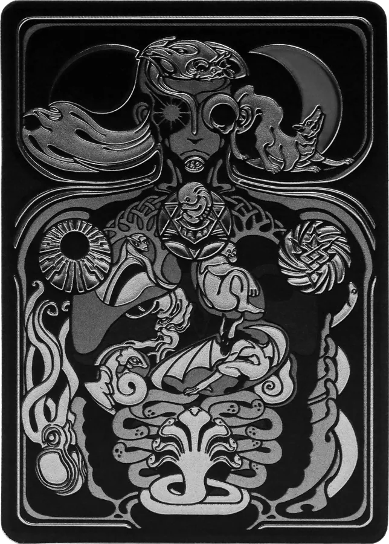

Overview
The Original Creator (最初造物主, lit. Primeval Lord Maker of All Things, Zuìchū zàowùzhǔ), also known as the Oldest One (最初, lit. The Primeval, Zuìchū) and Primordial Chaos (原初混沌, Yuánchū hùndùn),1 is the existence who created the universe and everything in it.2
He is the amalgamation of all concepts and symbols in the universe. He is the source of all Sefirot, Uniquenesses, and Beyonder Characteristics of all Pathways. All things that shouldn't happen might happen when encountering him.
He was asleep deep inside Earth until one day he woke up and created a cataclysm that almost destroyed humanity, ushering in the First Epoch. Due to his awakening and division, many Outer Deities came and cast their gaze upon Earth.
Note: "Oldest One" (最初, Zuìchū) is the same Chinese word as the "Original" used in "Original Creator" (最初造物主).
Everything has godhood in them. The Oldest One is still alive, alive in everyone's bodies.
Roselle Gustav, Book 1, chapter 1308.
Characteristics
Collective of All
The Original Creator is the collective of all. He is crazy, but also rational; he is confused, but also lucid. He created everything, and he destroyed everything. He loves all things, and he also hates all things. He has the most intense of all desires, yet he is indifferent and unaffected by anything.3
He is the maker of the universe, and also its destroyer. He is both day and also night. He is the light of holiness, and also the decadent abyss.4 He is all-inclusive, masculinity, femininity, and gender-neutral all in one.5
He is the amalgamation of all contradicting concepts and symbolism.
Primordium and Chaos
He is the Primordial Chaos (原初混沌, Yuánchū hùndùn), the Chaos that the world was born from, and would eventually return to.6 Manifestations of the Primordium and Chaos nature of the Original Creator include:
- The Primordial God Almighty, one of the split-off personas of the Original Creator, and the symbol of the Chaos Sea.
- The Original Creator's three direct children all hold aspects of Chaos:7
- The Chaos Primogenitor, Sequence 0, of the Mother Goddess of Depravity.
- The Chaos Mist, Sequence 0, of the Son of Chaos.
- The fact that the Mother Tree of Desire is also the Father of Devils, making her symbolically, inherently Chaotic.
- The Fourth Pillar, which represents the endpoint of destiny, the universe's destruction, and the finale of all things, the return of everything to Chaos, including the three Pillars.
- As the feminine aspect of the Original Creator, the Demoness, who is also named the Chaos Demoness and Primordial Demoness, holds authority over both Chaos and Primordium.8
- The Primordial Hunger possesses Primordium and Chaos qualities, so he prioritized devouring the Sefirot and Great Old Ones related to those qualities the most. Among the Sefirot, his objectives include the City of Calamity, and the Chaos Sea with the Uniqueness of Hanged Man and others.9 Among the Outer Deities, he preferred the Uncertain Mist the most,10 because he is the Chaos Gastric Juices, while the Uncertain Mist is a part of the Son of Chaos.11
Chaos (混沌, Hùndùn) is the End (结束, Jiéshù), while Primordium (原初, Yuánchū) is the Beginning (开始, Kāishǐ). These two aspects are similar to some extent, and at the Original Creator's level, both the Beginning and the End merge into one. Manifestations of the inherent connection between the Beginning and the End include:12
- The destruction of the Fourth Pillar would also bring about a new world.
- The Demoness' Primordium authority, and the Calamity of Destruction's title as the Disaster of Origin, signifies that they, to some extent, catalyze new beginnings through destruction, such as how supernova explosions give birth to new stars.
- The Twilight Giant possesses both the authority of Twilight, which represents the gradual contraction and conclusion of this universe, and the authority of Dawn, which signifies the beginning of a new universe.13
Disorder and Madness
As the amalgamation of all contradicting concepts and symbolism, all his actions are random, even he himself cannot predict them.
The reason Disorder (混乱, Hǔnluàn) and Madness (疯狂, Fēngkuáng) are the bottom-layer rules of this world14 is because everything in this world (all living beings, all Beyonder Characteristics, the way events unfold, and the miraculous turns of Fate) originates from the Original Creator. Something good will inevitably carry bad aspects, and vice versa. This is the essence of the world, the fundamental symbol that governs all things. Even Great Existences on the level of the Pillars can't completely avoid it, they can only mitigate its influence.15
Manifestations of this characteristic include:
- The extreme loss of control for most Beyonders is when Godhood gains absolute dominance, transforming them into a state similar to the Original Creator, completely chaotic, completely losing their sense of self.
- The Key of Light's symbolism of Endless Disorder (无尽的混乱, Wújìn de hǔnluàn), signifying that the essence of Fate is Disorder, which embodies Madness.16
Convergence and Division Instincts
As the amalgamation of all contradicting concepts and symbolism, the Original Creator naturally has an uncontrollable tendency to Split, and once he Splits, there will be a strong trend towards Convergence. Thus, he is very unstable because both Convergence and Division are his instincts.17 He couldn't have repealed the Law of Convergence to prevent his own fragmentation.18
- This is the crux and origin of the Law of Convergence,19 which applies to Beyonder Characteristics, Uniqueness, and Sefirot, and which manifests through influencing Fate itself.20
- Convergence is the instinct of all things, originating from the Original Creator's tendency to Converge. The higher the level, the stronger the instinct.
- If one reaches the Sefirot Accommodation Limit, just accommodating an additional Sefirah will lead to being controlled by the Convergence Instinct in an irreversible manner. They would be unable to restrain themselves from Converging until they become the embodiment of the entire universe, which is also the innate instinct of the Original Creator. Once this process begins, it can only be interrupted by their complete fall and division.
Revival Scenarios
Known scenarios for the Original Creator's revival include:
- The Mirrored Original Creator, born from the union between the Original Creator's masculine and feminine aspects, embodied by the Sefirah City of Calamity and the two Pathways of Red Priest and Demoness. This is the only revival scenario where the Original Creator can achieve a stable existence.21
- The massive aggregation of Sefirot and Beyonder Characteristics would cause the Oldest One to revive,22 for example, the merging of the nine Sefirot on Earth.23
- The Primordial Hunger Devouring the Chaos Primogenitor would cause an aggressive Convergence to occur, causing the Original Creator to awaken.24
- There are other unmentioned Pathways in the universe that could possibly resurrect the Original Creator to a certain extent like the Red Priest and Demoness Pathways, but they have no possibility for a stable existence.25
Exception to All Rules
The Original Creator represents the ultimate, chaos, beginning and end, the unknowable and undiscussable. No existence can surpass this level, and this level can only have one being.
He is the Exception, the Inconceivable, the Incomprehensible, the Indescribable. All things that shouldn't happen might happen when encountering him: unknowable, undiscussable, unnameable.26 For example:
- Normally, things like Uniquenesses and Sefirot cannot be divided, copied, or destroyed. Only one situation can cause them to be torn apart: encountering the Original Creator. And it was this single instance of Sefirot being torn apart that led the Great Old Dominators to discover that torn Sefirot could self-complete.
- The Mother Goddess of Depravity, as The Indestructible, would never perish, unless she encountered the Original Creator who could make the impossible happen, or the Fourth Pillar symbolizing the end to everything was born, or she overextended the Chaos Primogenitor's unique symbolism as the nascent Original Creator of the next universe.27
The Original Creator naturally can do everything that his other counterparts can, at the highest level.
Indestructible Spiritual Imprint
The Original Creator created the entire world, created all things, created all Outer Deities, and finally split into six Sefirot, sixteen Uniquenesses, and countless Beyonder Characteristics. From this perspective, all things possess Godhood.28
- The spiritual imprint of the Original Creator resides within all Sefirot, Uniquenesses, and Beyonder Characteristics. Even though his Will would gradually weaken over time unless a true resurrection occurred, his Spirit remained indestructible and would always seek to reawaken. The higher up in sequence, the closer one is to the Original Creator. The more one learns about him, the more likely he will awaken inside oneself.29 High-ranked Beyonders would carry in their subconscious the mental imprints or past shadows of the Great Old Ones presiding over their Pathway, and potentially even glimpses of the Original Creator.30
- Compared to the Sefirot, Uniquenesses, and Beyonder Characteristics directly derived from him, the Tenebrous World, Brood Hive, and Nation of Disorder are much less affected in this regard. This is because they originated from the Mother Tree of Desire, Mother Goddess of Depravity, and Son of Chaos respectively rather than being a product split off from the Original Creator.31
- Similarly, the Outer Deities born from the union between the Original Creator and the Mother Goddess of Depravity are much less impacted in this regard, since they are neither his split-off personas nor his three direct descendants. With this intermediary layer, the spiritual imprint of the Original Creator within their Sefirot, Uniquenesses, and Beyonder Characteristics was relatively weak.
- Normal humans also carried Godhood and were subject to the erosion and influence of the Sea of Collective Subconscious, inheriting the most profound cognition and impressions of ancient humanity. Disorder, Madness, and Primal Instincts lurked deep within their subconscious.
The closer it is to The Apocalypse, the easier it is for Beyonders to advance due to the weakening will of the Original Creator.
Characteristics of the Created Universe
The form of the created universe depends on the Original Creator's thought.32 If the universe is destroyed and the Original Creator revives to recreate the world, whether the three Pillars will change or not depends on the Original Creator. This is because the Original Creator has the ability to change things, and the Astral World, Spirit World, and Reality are not necessarily divided or exist in this way by default.33
The Oldest One's power is only related to the Oldest One himself, and not directly related to the Sefirot. In this universe, he himself became the Sefirot, Uniquenesses, and Beyonder Characteristics. This is the reason why, when the universe reaches its end and the Fourth Pillar brings about the destruction and restart of the entire universe (even Great Old Ones would perish and the universe would return to Chaos), the Chaos Primogenitor as the next Original Creator can recreate the universe.
Sefirot, Uniquenesses, Beyonder Characteristics
Beyonder Characteristics are the cornerstone composing the Original Creator. In the next universe, they will still exist, so his tendency to converge and diverge due to the Law of Beyonder Characteristics Convergence would still remain.34 However, he can freely permutate, combine and modify Beyonder Characteristics, for example, mixing two Pathways into a single pathway, Uniqueness, or even creating a pathway of completely brand new symbolism or domain.35
History
Genesis
On the first day, the Original Creator awoke and created this world, but Reality, the Spirit World, the Astral World, and Fate were still mixed together.36
On the second day, the Oldest One birthed the Mother Goddess of Depravity. Reality gained a foundation, the Spirit World and Astral World were separated, and the River of Fate began to flow. Soon after, the Mother Tree of Desire was born, giving rise to life and introducing evil and desire. Then came the Son of Chaos, who established order, and with it, shadows naturally emerged.
On the third day, the Oldest One and the Mother Goddess united, and the Mother of All Things gave birth to a firstborn daughter, the Goddess of Fate. From then on, the fates of all things began to intertwine, no longer in absolute chaos but instead forming relative patterns and foreseeable futures.
After the Goddess of Fate, the other Outer Deities were born one after another from the union between the Original Creator and the Mother Goddess of Depravity,37 with the Circle of Inevitability as their eldest son.38
The Original Creator's Awakening
When the stars are right, Chaos will rise from underground, and the Great Oldest One will awaken.
Book 1, chapter 1167.
In a time more ancient than the Modern Era of the Pre-Epoch, the sleeping Oldest One had naturally split into multiple personas. They were also in a state of slumber, but they began to use the authority and Beyonder Characteristics they controlled to influence the world, making many preparations for the true dissociation which would occur when the Original Creator awakened. Among the multiple personas, the Primordial God Almighty and the Celestial Worthy of Heaven and Earth for Blessings were the most powerful and active Great Old Ones on Earth.
- Besides Earth, there are no other Great Old Ones in the universe that originated from a split-off personality of the Original Creator.39
The Myth of Creation according to the Orthodox churches' holy scriptures is as follows:
The Creator awoke from Chaos and shattered the darkness, creating the first ray of light. He then fused himself completely into the universe and made up all of existence. His body became the land and stars. One of his eyes became the sun, while the other became the crimson moon. Some of his blood rushed into the seas and rivers, nourishing and nurturing lives.
His lungs turned into the elves; His heart turned into the giants; His liver turned into the treants; His brain turned into the dragons; His kidneys turned into the feather serpents; His hair turned into the phoenixes; His ears turned into the demonic wolves; His mouth and teeth turned into the mutants, and His remaining bodily fluids turned into the sea monsters, of which the essence was Naga. His stomach, His small and large intestines, and the evil parts of His body turned into devils, evil spirits and various kinds of unknown maleficent existences. His spirit became the Eternal Blazing Sun, the Lord of the Storms, and the God of Knowledge and Wisdom.
His wisdom gave birth to humanity. That was the first Epoch, the Chaos Epoch.
Book 1, chapter 18.
The Myth hints at the true story: the Original Creator woke up from the underground during the 21st century of the Pre-Epoch, then his body shattered into six Sefirot and Beyonder Characteristics of sixteen Standard Pathways. The three direct descendants of the Original Creator were the Outer Deities most affected by this event, having part of their Sefirot and Pathways broken off and attracted to Earth due to the Law of Convergence. When there were twenty-two Pathways and nine Sefirot, a balance was reached, and the attraction stopped.40
Astral Barrier
The Astral Barrier is the barrier around the planet, formed after the Original Creator awakened at the end of the Pre-Epoch.
Sefirot
The Ancient Gods believed that the Original Creator left nine legacies behind, which were derived from some part of his body. They might be kingdoms, cities, rivers, oceans, keys, etc. The nine Sefirot correspond to nine Above the Sequence groups and twenty-two Standard Pathways.
The nine Sefirot are Sefirah Castle, Chaos Sea, River of Eternal Darkness, Brood Hive, Knowledge Moor, Tenebrous World, Key of Light, City of Calamity and Nation of Disorder.41
Among the Sefirot, the Brood Hive, Tenebrous World, and Nation of Disorder, and their corresponding Pathways, actually originated from the Original Creator's three direct descendants. The other six Sefirot and sixteen Standard Pathways originated from the Original Creator and were split off when he woke up, with different personas controlling different Sefirot, Uniquenesses, and Beyonder Characteristics.42
Mirrored Original Creator
The Mirrored Original Creator refers to the existence born from the union between the Original Creator's masculine and feminine aspects, embodied by the Sefirah City of Calamity and the two Pathways of Red Priest and Demoness. It was originally a resurrection plan of the Original Creator to achieve a stable existence.43
Chaos Primogenitor
The Chaos Primogenitor is the Original Sin of the universe. Although merely Sequence 0, it carries significant symbolism that represents the nascent Original Creator of the next universe. Nurturing it is one of the Mother Goddess of Depravity's two most vital symbols and a key reason she remains a Pillar even after the Brood Hive's separation. Even as a Mother, she cannot overly wield its symbolic powers without risking instability or further complications.44
See also
Mirrored Original Creator, Primordial God Almighty, Celestial Worthy of Heaven and Earth for Blessings, Sefirot, and Outer Deities.
References
- Author's WeChat post history.
- Book 1, chapters 1261 and 1262.
- Book 2, chapter 1088.
- Book 1, chapter 1369.
- Book 1, chapter 441.
- Book 2, chapter 1091.
- Author's WeChat post um, part 9.
- Author's WeChat post demoness_abilities.
- Book 2, chapter 1164.
- Author's WeChat post ph, part 3.
- Author's WeChat post coi, part 39.
- Author's WeChat post mother_formulas, part 43.
- Author's WeChat post mother_formulas, part 25.
- Book 1, chapters 1193 and 1387.
- Book 2, chapters 1118 and 1169.
- Author's WeChat post fate_abilities.
- Book 2, chapter 1090.
- Author's WeChat post fate_formulas, part 47.
- Book 1, chapter 1272.
- Book 1, chapter 1104.
- Book 2, chapter 1107.
- Author's WeChat post tyrant_formulas, part 62.
- Author's WeChat posts tyrant_formulas, part 41, and hn, part 25.
- Author's WeChat post ph, part 30.
- Author's WeChat post beauty_goddess, part 27.
- Book 2, chapter 1089.
- Book 2, chapter 1161.
- Book 2, chapter 1088.
- Book 1, chapters 1271 and 1261.
- Book 2, chapter 1119.
- Book 2, chapter 1167.
- Author's WeChat post error_formulas, part 19, answer 1.
- Author's WeChat post tyrant_formulas, part 24.
- Author's WeChat post error_formulas, part 19, answer 2.
- Author's WeChat post death_rituals, part 19.
- Book 2, chapter 1171.
- Book 2, chapter 1090; Author's WeChat post um, part 8.
- Author's WeChat post giant_formulas, part 54.
- Author's WeChat post error_abilities, part 14.
- Book 1, chapter 1224.
- Book 1, chapter 1203.
- Book 2, chapter 1088.
- Book 2, chapter 1107.
- Book 2, chapters 1156 and 1157.
Source
Article adapted from Original Creator on the Lord of the Mysteries Fandom wiki (CC BY-SA). Chapter numbers follow that article's citation format.
Image gallery
